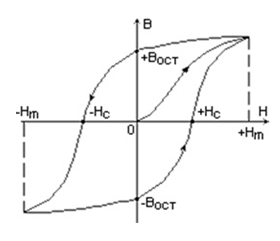
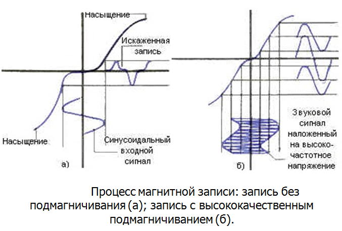
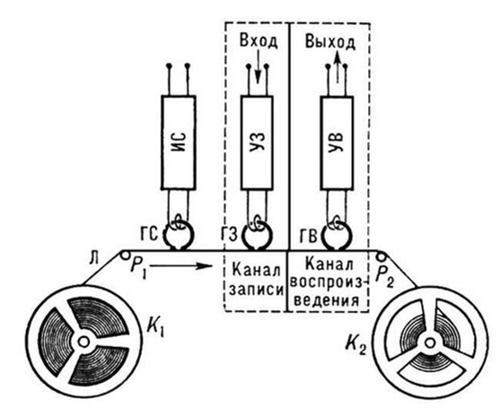

Бортовые средства объективного контроля. Принцип магнитной звукозаписи.
Бортовые средства объективного контроля
Бортовые средства объективного контроля — технические средства, предназначеные для регистрации и сохранения полетной информации, характеризующей условия полёта, действия экипажа и функционирование бортового оборудования. СОК используются для: анализа причин и предупреждения лётных происшествий; технической диагностики бортового оборудования и прогнозирования его технического состояния; оценки действий летного состава при выполнении полетного задания.
Существует два вида СОК — бортовые устройства регистрации и бортовые магнитофоны. В последнее время начинают разрабатываться интегральные устройства, совмещающие в себе функции обоих видов.
Бортовые устройства регистрации (БУР) предназначены для автоматической записи параметров полёта (высоты, скорости полёта, частоты вращения ротора авиадвигателей, углов атаки, ускорений) и параметров наиболее важных агрегатов и систем.
По функциональному назначению БУР подразделяются на аварийные, эксплуатационные и испытательные.
Аварийные БУР для накопления и сохранения полетной информации, которая может быть использована при расследовании инцидентов, аварий и катастроф.
Эксплуатационные системы регистрации записывают значительно большее число параметров, чем аварийные БУР. Накопитель эксплуатационного регистратора защиты не имеет и при авариях не спасается.
Испытательные системы регистрации используются при проведении различного рода летных испытаний образцов авиационной техники.
По принципу записи информации БУР делятся на механические, оптические (осциллографические), магнитные и электронные с твердотельными ЗУ; в механических и оптических накопителях сигнал записывается в аналоговой форме, в магнитных и электронных — в цифровой.
БУР с механической записью использовались на старых типах ЛА и имели малое количество записываемых параметров. К таким устройствам относятся, например, барограф-высотописец АД-2, где запись производилась чернилами на бумажной ленте, или регистраторы перегрузок К3-63, в которых запись осуществлялась процарапыванием эмульсии на прозрачной пленке.
БУР с оптической записью также являются устаревшим видом оборудования, накопитель информации в них является шлейфовым осциллографом с фотопленкой в качестве носителя информации. Примером оптических БУР может служить САРПП-12, применяющийся на вертолетах МИ-8 и некоторых военных самолётах.
В магнитных БУР в качестве носителя используется магнитная лента, иногда проволока, запись информации производится в виде время-импульсного, частотного или цифрового кода. Примерами магнитных БУР могут служить МСРП-12-96, МСРП-64, МСРП-256.
БУР с твердотельным накопителем — новое поколение устройств регистрации, примеры таких устройств: ТБН-К-4 — эксплуатационный и ЗБН-1-3 — защищенный (аварийный).
Бортовые магнитофоны предназначены для записи речевой информации — переговоров экипажа по внешней или внутренней связи (в некоторых специальных случаях возможно применение в качестве СОК видеомагнитофонов — для записи видеоинформации о происходящем на борту).
Бортовые магнитофоны можно классифицировать по разным типам применяемых носителей информации:
Магнитофоны с записью на стальную проволоку, например: МС-61Б, П-503Б
Магнитофоны с записью на магнитную ленту, например: МАРС-БМ
Магнитофоны с записью на твердотельное ЗУ, например: П-507М
Накопитель информации СОК, используемых для расследования авиационных происшествий, должен иметь жаро- и ударопрочный герметичный корпус, окрашенный в ярко-оранжевый цвет (невыгорающей краской), с предупреждающими надписями на разных языках (английский — обязателен). Как правило, если это конструктивно возможно, корпус делают в виде шара или цилиндра.
Регистрирующие устройства с небольшим количеством записываемых параметров (два — три) устанавливались на отечественных самолетах еще с первых лет Великой Отечественной войны.
В мае 1965 года Международная организация гражданской авиации (ИКАО) рекомендовала всем государствам уделять особое внимание применению средств объективного контроля, однако, в нашей стране их бурное развитие началось только после вступления СССР в ИКАО в 1970 году, так как полет самолетов на международных линиях разрешен только с использованием СОК.
За рубежом большой вклад в разработку первых бортовых средств объективного контроля внесли француз François Hussenot и австралийский инженер David Warren.
Принцип магнитной звукозаписи
Принцип действия магнитной звукозаписи чрезвычайно прост — использование остаточного намагничивания ферромагнитных материалов. Звуковые сигналы подаются на миниатюрный электромагнит — головку записи (ГЗ), мимо которой с постоянной скоростью движется лента, способная к намагничиванию. Ее частицы намагничиваются и при движении ленты мимо другой головки — воспроизводящей (ГВ), создают в ней ЭДС переменного тока звуковой сигнал. После усиления он поступает на громкоговоритель.
В таком описании упущена одна важная деталь — остаточная намагниченность В(Н) ленты не получается пропорциональной силе магнитного поля записывающей головки (Н). Намагничивание ленты идет по довольно сложной нелинейной кривой, именуемой петлей гистерезиса магнитного материала.

Даже упуская наличие гистерезиса (расщепления кривой), придется считаться с тем, эта кривая намагниченности имеет резко нелинейный характер. В частности, остаточная намагниченность при малой напряженности магнитного поля близка пулю, что приводит к огромным нелинейным искажениям даже при слабых уровнях записываемого сигнала.
Если
записывающая
магнитная головка создает синусоидальное во времени магнитное поле, то
зависимость намагниченности отдельных «магнитиков» (именуемых именами) ленты от
расстояния вдоль ее длины будет не синусоидальной. Здесь присутствуют явно
выраженные искажения, напоминающие искажения типа «ступеньки» (при переходе
сигнала через 0) и типа отсечки (при большой амплитуде сигнала) в
усилителях.
Ясно, что для линеаризации передаточной характеристики
записи надо сместить «рабочую точку» на кривой намагниченности на ее линейный
участок. Можно это сделать, используя подмагничивание ленты постоянным магнитным
полем — но тогда будет использована только половина кривой намагниченности ленты
и ее отдача упадет вдвое. Поскольку эта кривая симметрична, то переход к
несимметричному намагничиванию чреват массой нежелательных последствий —
достаточно отметить, что будут, не полностью использованы возможности материала,
и он будет иметь постоянную намагниченность, возможно постепенное
размагничивание ленты или, напротив,
намагничивание в поле близко расположенных магнитов и даже в магнитном поле
земли.
Был найден весьма остроумный метод — высокочастотного подмагничивания. При нем в головку записи подают ток высокой (десятки—сотни кГц) частоты, амплитуда которого такова, что соответствует средней ординате кривой намагниченности. Сам по себе такой ток создает в записывающей головке переменное магнитное поле, постепенно спадающее по мере удаления от центра щели и оставляющее магнитный слой ленты размагниченным. Более того, если он был намагничен, то происходит частичное размагничивание магнитного слоя. Но если наряду с ВЧ-током подмагничивания подать на головку записываемый сигнал, то он нарушает симметрию ВЧ-колебаний и вызывает возникновение остаточной намагниченности той или иной полярности, в зависимости от полярности записываемого сигнала.
Поскольку ВЧ-сигнал вывел «рабочую точку» на середину каждого участка кривой намагниченности, то зависимость остаточной напряженности от тока НЧ-сигнала в записывающей головке даже при малых токах сигнала записи в ГЗ становится линейной. Конечно, при большой величине НЧ-сигнала наступает насыщение намагниченности и эта кривая приобретает плоский участок. В «среднем» лента записи размагничена, т.е. постоянной составляющей намагниченности, вредно сказывающейся на шумах и ее динамическом диапазоне нет.
Как сделать, чтобы кривая намагниченности ленты при ВЧ-подмагничивании имела как можно более линейный характер и большее значение предельной намагниченности, — это уже дело разработчиков материалов для магнитных лент.

Первое время для размагничивания лент (стирания записи) применяли сильные постоянные магниты. До сих пор стирающие головки в виде маленьких магнитиков, отводимых от ленты при воспроизведении, можно встретить в самых простых магнитофонах — скорее, уже в игрушках, чем в промышленных моделях даже невысокого класса. Поскольку для реализации ВЧ-подмагничивания нужен ВЧ-генератор синусоидальных колебаний, то разумно применить его и для питания стирающей головки. Поэтому упомянутый генератор обычно называют генератором стирания и подмагничивания. При этом стирающая головка требует заметно больших токов, чем записывающая головка.
Частота генератора тока ВЧ-подмагничивания должна в 4-6 раз превышать верхнюю граничную частоту звукового диапазона, т.е. при записи частот до 20 кГц она может доходить до 120-150 кГц. Иногда применяют две синхронные частоты — достаточно низкую для стирания и вдвое большую для подмагничивания. Генератор токов стирания и подмагничивания должен иметь синусоидальную форму с минимумом гармоник. Теперь коротко рассмотрим процессы при воспроизведении магнитной записи. При ней намагниченная лента проходит мимо воспроизводящей головки, которая конструктивно похожа на записывающую - в ряде магнитофонов и впрямь для этого применяют ту же самую головку (она называется универсальной).
При воспроизведении приходится сталкиваться с тремя фундаментальными проблемами:
1. ЭДС, наводимая в головке, определяется скорость изменения магнитного потока и потому оказывается прямо пропорциональной частоте записанного сигнала;
2. если ширина щели головки приближается по порядку величины к длине магнитного участка сигнала, то ЭДС стремится к нулю (эти искажения получили название щелевых искажений);
3. ЭДС головки в области средних частот (порядка 1000 Гц) мала и составляет обычно доли милливольта для низкоомных головок и до нескольких милливольт для высокоомных (в транзисторных магнитофонах они применяются редко).
Рост уровня сигнала воспроизводящей головки от частоты наблюдается в диапазоне частот от самых нижних до примерно 5—10 кГц. Далее он замедляется и даже переходит в спад из-за щелевых искажений. Чем меньше ширина щели воспроизводящей головки, тем при более высоких частотах наблюдаются щелевые искажения.
